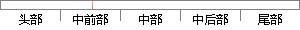

Web服务器:Apache Tomcat Server 8.
片段位置图

相似结果|
相似片段 1：内含了一个 HTTP服务器，它也可以被视作一个单独的Web服务器。但是，不能将 Tomcat 和 Apache Web 服务器混淆，Apache Web Server是一个用 C 语言实现的 HTTP
相似片段 2：第二层：中间件 Web服务器，由 Apache + Tomcat服务器组成。Apache Web Server是由 Apache组织负责的一个 Freeware，它具有强大、稳定、公开的特点
相似片段 3：的 Web 服务器。但是，不能将 Tomcat 和Apache Web 服务器混淆，Apache Web Server 是一个用 C 语言实现的 HTTPweb server；这两个HTTP web
相似片段 4：由于 Tomcat本身也内含了一个 HTTP服务器，它也可以被视作一个单独的 Web 服务器。但是，不能将 Tomcat 和 Apache Web 服务器混淆，Apache Web Server
相似片段 5：、JSWDK、Java Web Server等，由于 Apache Tomcat具备安装方便，所占系统资源较少、配置简单等特点，本系统选用 Apache Tomcat所为 JSP服务器。Tomcat
相似片段 6：3.4 WEB服务器简介本系统选用的WEB服务器是 TOMCAT6.0，Tomcat是由 APACHE软件基金会的 Jakarta項目开发的一个 Servlet容器，按照 Sun
相似片段 7：支持 JSP/Servlet的WEB服务器有很多，Apache 的 Tomcat可以做为独立的WEB服务器来用，apache 功能强大、高效，但并不能支持 JSP 及 servlet。Tomcat
相似片段 8：作为一个与 Apache 独立的进程单独运行的。Tomcat和 IIS、Apache等Web服务器一样，具有处理HTML页面的功能，另外它还是一个 Servlet和 JSP 容器，独立
相似片段 9： Java 软件开发工具包。4.1.2 Apache和 Tomcat在 Web 服务器产品中，Apache/Tomcat 是 Apache 软件基金会开发的跨平台的 Web 服务器/应用服务器组合，和
相似片段 10：的Web服务器来使用。但是，在作为Web服务器方面，Tomcat处理静态 HTML页面时不如 Apache迅速，也没有 Apache健壮，所以我们一般将 Tomcat与 Apache配合使用
|
※ 片段修改建议 ※
近似词参考：